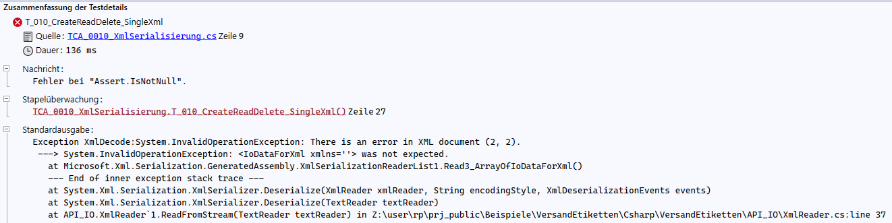
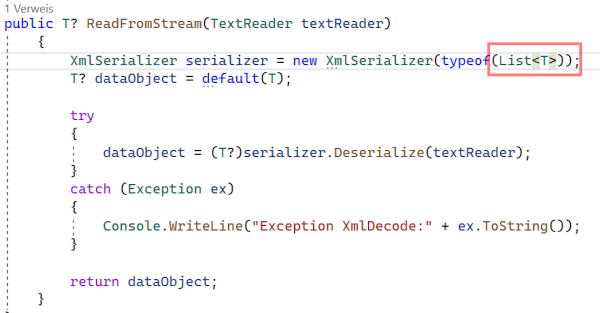
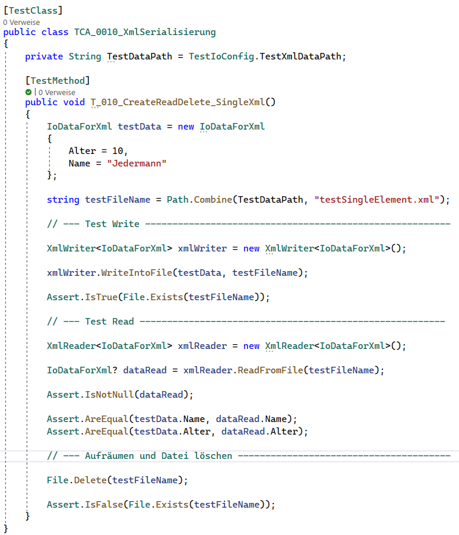
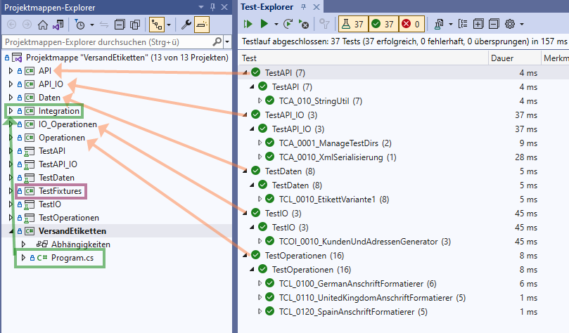
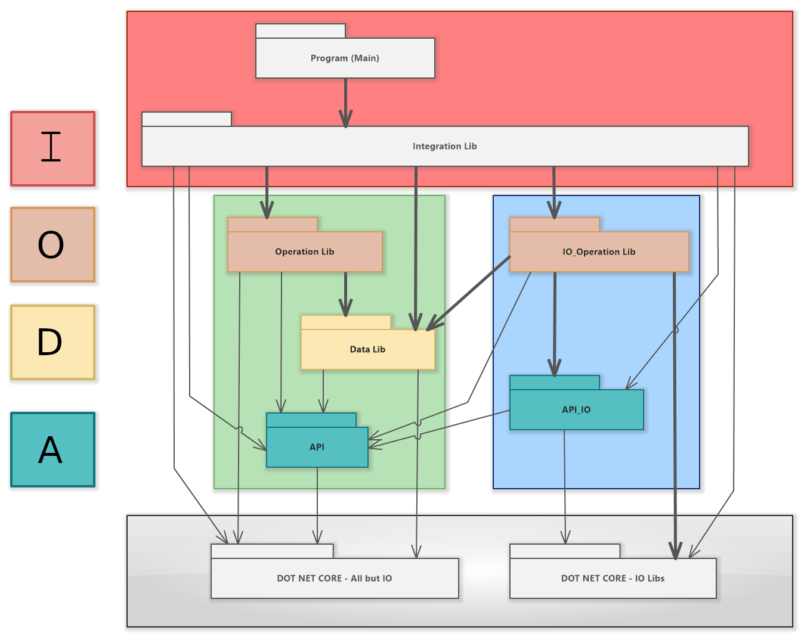
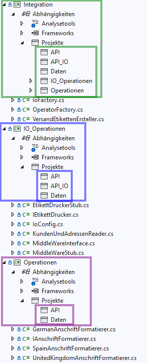

Microsoft Visual Studio 2022
Für die Software-Entwicklung wende ich folgende Techniken/Prinzipien an:
Im Folgenden beschreibe ich grob die Historie, wie ich was in welcher Reihenfolge umgesetzt habe. Diese Reihenfolge ist natürlich nur eine mögliche Variante, die Software zu erstellen. Es zählt einzig das Endergebnis.
Vor der Codierung muss zuerst die Aufgabenstellung verstanden werden. In diesem einfachen Fall ist das gut möglich. In echten Projekten muss die Aufgabenstellung oft gemeinsam erarbeitet werden, bisweilen sogar iterativ mit Prototypen oder leichten Implementierungen.
Die Analyse des Tickets und der Aufgabenstellung wird in der Java-Implementierung beschrieben.
Kommentare, die mit //i/ (i für info) starten, enthalten Erläuterungen zu dieser Referenzimplementierung, sie würden in Produktiv-Code entfallen.
Der Source-Ordner liegt hier:
Hier wurde von mir keine Entwicklung, sondern eine Portierung der Java-Source-Dateien durchgeführt.
Zuerst wurde ein Projekt mit Libraries eingerichtet. Ich verwende hier einen Standard-Aufbau:

Die Produkt-Libraries sind grün, die Test-Libraries violett und die Produkt-Exe rot eingerahmt.
Die Libray Integration ist noch einmal orange eingerahmt. Sie hat eine Sonderstellung, weil sie die Workflows der Applikation (des Produktes) VersandEtiketten implementiert. Deshalb ist die Integration die einzige Library, die ich für ein anderes Produkt nicht wiederverwenden würde.
Alle anderen Libraries aus dem grünen Rahmen können für andere Produkte/Projekte weiterverwendet werden. Zum Beispiel könnte eine andere Integrations-Library das Adress-Feld für einen Briefversand ebenfalls mit diesen Operations-, Daten- und API-Klassen erstellen und als String-Liste an das Brief-Management übergeben.
Bis auf Program.cs in VersandEtiketten enthalten die anderen Projekte zum Start noch keine weiteren Source-Dateien.
Im zweiten Schritt habe ich die API portiert und auch die Tests für die API-Klassen übernommen. Dabei konnte ich auf einige Methoden verzichten, weil .NET bereits
String.IsNullOrWhiteSpace(testStr)
bereitstellt.
Die erste portierte Operation war der GermanAnschriftFormatierer. Um ihn verwenden zu können, mussten noch die Klassen Adresse und Kunde in die Daten-Lib sowie das Interface IAnschriftFormatierer in die Operations-Library portiert werden.
Da von den Daten nur noch die EtikettVariante1 fehlte, habe ich diese als Nächstes importiert. Dazu gehört auch noch ein Test, weil diese Daten-Klasse auch Methoden enthält.
Portiert inkl. der Tests.
Portiert inkl. der Tests.
Es gibt am 7.12.22 um 12:09 noch keinen Zugriff auf die Operationen vom Programm.cs aus. Das Programm macht noch nichts außer auszugeben, dass noch nichts implementiert ist, wenn man es startet. Es gibt zwar bereits die Klasse VersandEtikettenErsteller, doch sie enthält außer einem einsamen Property noch keine einzige Methode.
Zum Nachsehen in github: Stand vom 7.12.22 um 12:09
Es existiert auch noch keine IO-Funktionalität. Diese wird im nächsten Schritt portiert.
Das war ein wenig mehr Arbeit als bei den anderen Klassen, denn hier muss auf eine andere API zugegriffen werden. .NET unterscheidet sich hier deutlich von Java.
Es wäre vermutlich schneller gegangen, wenn ich alles gleich komplett neu implementiert hätte.
Denn bei der Umstellung von <List<T>> auf <T>
habe ich eine Stelle übersehen (sie versteckte sich sehr weit rechts im Code ...).
Das hat dazu geführt, dass ich die Test-Daten zwar schreiben, aber nicht wieder einlesen konnte.
Die Fehlermeldung vom Parser war korrekt aber auch nicht sehr hilfreich:
Wie geht man nun damit um?
Ich habe Einiges ausprobiert inkl. Debugging, habe einen eigenen Test geschrieben, der nur ein Daten-Objekt schreibt und lädt, habe ein anderes Daten-Objekt verwendet usw.
Als das Alles nicht geholfen hat, habe ich einfach den Beispiel-Code für XML-Serialisierung mit .NET, den ich aus dem Internet geladen und als Vorlage verwendet hatte, in eine eigene Test-Methode kopiert und entsprechend angepasst.
Das dauerte einige Minuten, aber dann konnte ich einen einzelnen Datensatz als XML schreiben und auch wieder einlesen.
Als nächstes habe ich den XmlWriter eine Datei erzeugen lassen und sie wieder eingelesen, mit dem Beispiel-Code aus dem Internet. Da auch das funktionierte, musste der Fehler irgenwo im XmlReader liegen.
Es dauerte noch eine Weile, bis ich die Stelle gefunden hatte, obwohl der XmlReader nur zwei Methoden hat:
Manchmal ist man eben blind und sieht den Wald vor lauter Bäumen nicht. Und genau deshalb sollte man auch für (vermeintlich) trivialen Operations-Code immer einen Test schreiben. Oft werden einige Fälle im Code nicht behandelt, und man kann sie ergänzen. Dabei stellt man manchmal fest, dass die zu entwicklende Lösung doch nicht so einfach ist, wie anfangs angenommen.
Nachdem ich alle Hilfs-Test wieder entfernt hatte, blieb nur noch ein einziger Test für die IO-Lib übrig:
Wie in "mein TDD" beschrieben, fasse ich in dieser Methode Create, Read und Delete zusammen.
Es gibt nur noch eine weitere Test-Klasse im TestAPI_IO, die das
Verzeichnis Csharp/TestData erstellt und den Inhalt löscht:
TCA_0001_ManageTestDirs
Insgesamt habe ich wegen der Fehlersuche für diesen Teil statt einer halben Stunde zwei Stunden gebraucht.
Als Ausgleich für den Mehraufwand gibt es jetzt einen zusätzlichen Test für die API_IO, den ich im Java-Projekt ausgelassen habe.
Im letzten Schritt habe ich die Integratoren portiert und damit die Portierung abgeschlossen. Das war recht leicht und hat gerade einmal eine halbe Stunde gedauert.
Erst jetzt gibt es ein lauffähiges Programm, das die formatierten Anschriften auf der Console ausgibt.
Da ich nur die freie Version vom Visual-Studio nutze, konnte ich leider kein automatisches Code-Coverage durchführen wie in Java.
Code-Coverage fällt daher aus, was ich nur im privaten Bereich akzeptiere. Im professionellen Bereich möchte ich darauf nicht verzichten.
Der nächste Schritt wäre ein Review des Codes durch einen zweiten Entwickler.
Da ich allein an meinem Mini-Projekt arbeite, habe ich das Review selbst durchgeführt und z.B. noch Kommentare ergänzt und ein paar Kleinigkeiten "gerade gezogen".
Diesen Schritt auszulassen kann sehr teuer werden, denn neben der besseren Lesbarkeit werden oft noch mögliche Probleme oder fehlende Tests entdeckt.
Die Tests zur API_IO sind z.B. noch nicht komplett. Habt ihr es bemerkt?
Das folgende Diagramm zeigt eine Übersicht über die Libraries und ihre Tests:
Für jede Produkt-Library wurde eine Test-Library angelegt, mit Ausnahme der Lib Integration. Die Integration enthält ja keine Logik und wird hier einfach im Program.cs getestet, da ein Durchlauf ausreichend ist. Wichtig ist nur, dass keine (ungeplanten) Fehler auftreten. In größeren Projekten kann man natürlich auch noch eine Test-Library für die Integration erstellen oder eine eigene Integrations-Test-Solution.
Wozu dient nun die Erstellung so vieler Libraries? Wären Ordner im Dateisystem nicht auch ausreichend gewesen?
Die API-Libraries können in beliebigen anderen Projekten wiederverwendet werden. Dazu ist es ausreichend, die Libraries (ohne Quellcode) in das Projekt hereinzunehmen.
Doch wie verhält es sich mit Libraries für Daten, Operationen, IO-Operationen und Integration? Sie könnten auch in einer einzigen Library zusammengefasst werden. Doch dann verliert man die Zugriffskontrolle. Rufen Daten-Klassen andere Klassen aus dem Bereich der Operationen auf? Rufen Operationen Integratoren auf? Das ist beides nicht erlaubt, wenn man nach IODA entwickelt.
Das folgende Diagramm zeigt die prinzipiell erlaubten Zugriffe zwischen den Libraries.
Diagramm: Erlaubte Zugriffe in IODA (zum Vergrößern anklicken)
Unterhalb der eigenen API-Libs findet sich noch die .NET API.
Mittels der Projektabhängigkeiten in Visual Studio kann man nun genau festlegen, welches Projekt (Library) auf welches andere Projekt zugreifen darf.
Im Folgenden ist der Endzustand der Projektabhängigkeiten dargestellt. Zum Start der Entwicklung werden zunächst gar keine Abhängigkeiten eingetragen. Nur die notwendigen Abhängigkeiten wurden nach und nach von mir ergänzt.
Der Zugriff ist immer nur in einer Richtung erlaubt. Da die Integrations-Library bereits auf die Operations-Library zugreift, kann in der anderen Richtung für die Operations-Library kein Zugriff mehr auf die Integrations-Library eingerichtet werden, das verbietet schon das Developer Studio.
Um auf die API_IO von der Operations-Library aus zugreifen zu können, muss die Abhängigkeit von der API_IO im Projekt angegeben werden. Diese unerwünschte Abhängigkeit wird irgendwann auffallen. Durch ihre Entfernung aus dem Projekt werden alle Klassen in der Operations-Library unkompilierbar, die Klassen aus der API_IO verwenden. Der Code muss umgeschrieben werden.
Den verbotenen Zugriff einer Operationsklasse auf eine andere Operationsklasse kann man so nicht automatisiert prüfen lassen, das muss in Reviews oder anders geprüft werden.
Mit genügend Übung in IODA kommt man irgendwann gar nicht mehr auf die Idee, von einer Operation aus eine andere aufzurufen.
Nicht ganz so leicht ist es, die Logik aus den Integrationsklassen herauszuhalten. Das gilt besonders, wenn man unter Zeitdruck gerät. Für einen Hotfix kann man eine Ausnahme machen, wenn man bei der Übernahme der Änderungen in den Haupt-Zweig der Entwicklung den Code nicht einfach kopiert, sondern dann die Logik in eigene Klassen auslagert.
Auch fehlende Abhängigkeiten sind interessant. So verwendet hier im C# die Daten-Library die API-Library nicht, denn die dort eingesetzten String-Operationen existieren bereits in der .NET API. Daher ist die Abhängigkeit von der API überflüssig und wird hier auch nicht eingetragen.
Wird die API-Library nirgendwo als Abhängigkeit eingetragen, dann sollte man die Frage klären, warum das so ist. Kennen die Entwickler die API-Library nicht? Gibt es Methoden oder Code-Anteile, die in die API verschoben werden könnten? Ist die API-Library zu schlecht dokumentiert, dauert die Suche nach Funktionalität zu lange oder ist sie nicht auffindbar?
Als ein Nachteil so vieler Libraries wird oft aufgeführt, dass die Solution zu kompliziert werde oder die Erstellung und Verteilung eines Releases zu aufwendig werde. In Zeiten von Docker und ähnlichen Tools kann ich diese Argumentation nicht mehr nachvollziehen.
Reale Projekte sind oft auch sehr viel größer als diese kleine Demo, dann ist eine Unterteilung in sinnvolle Libraries extrem hilfreich, aus vielen Aspekten.